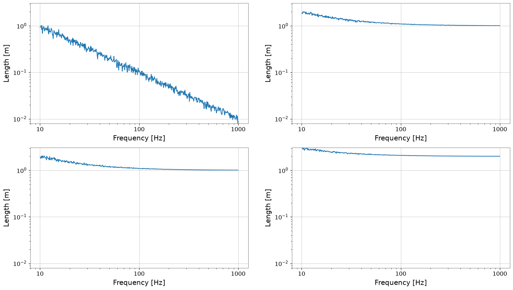
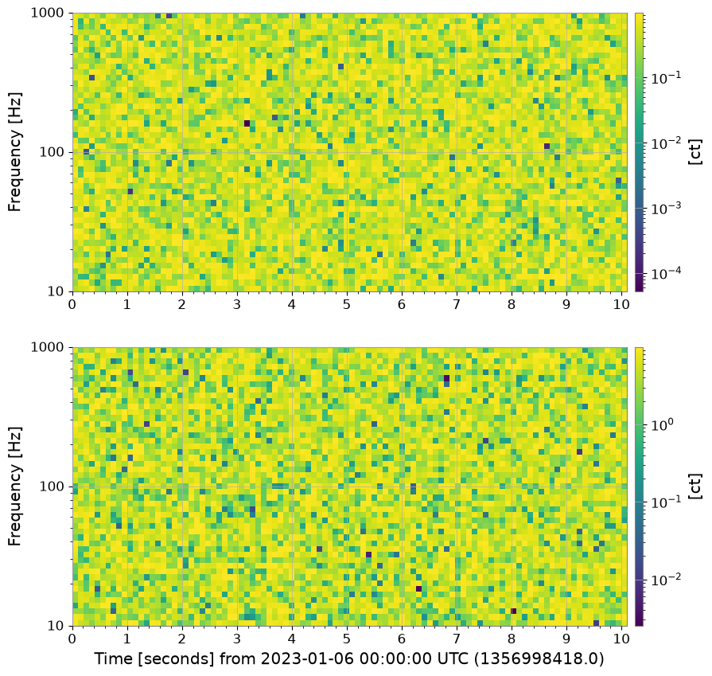
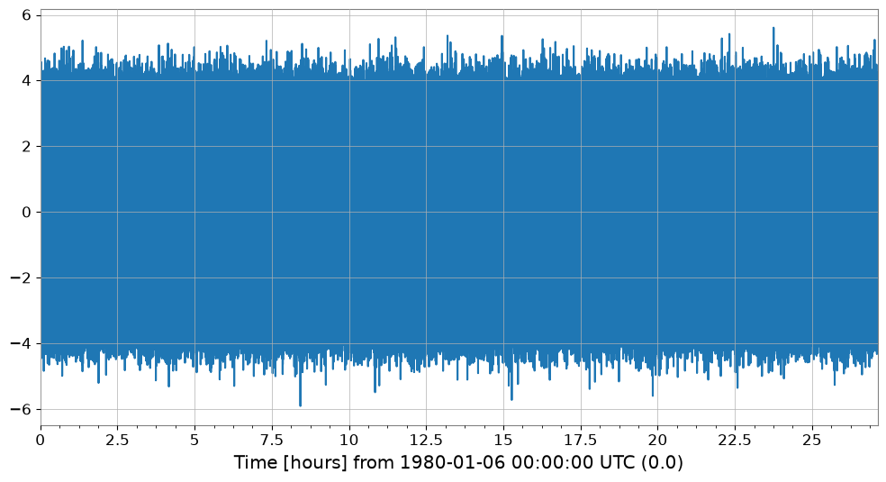
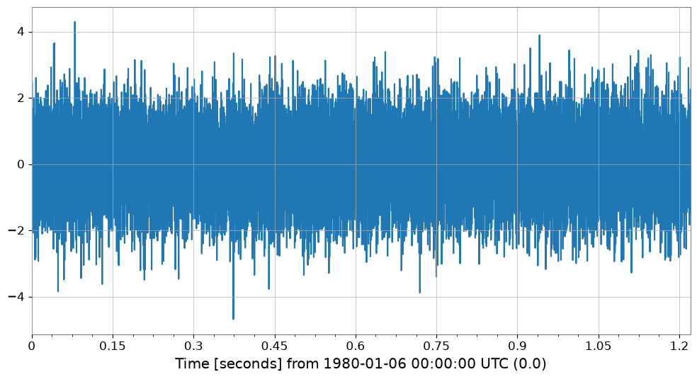
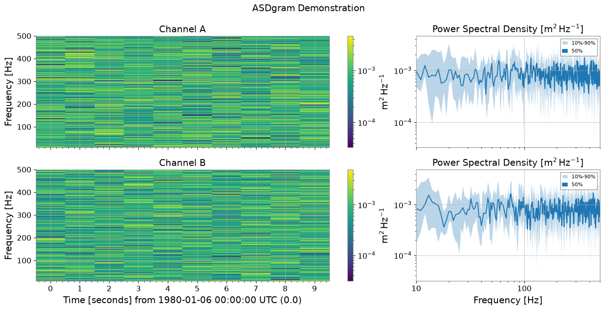

Plotting: 基本#
このノートブックでは、gwexpy の強化されたプロット機能を紹介します。 TimeSeriesMatrix や FrequencySeriesMatrix などの行列データ構造、および SpectrogramList などのコレクションに対する、「いい感じ」のデフォルト設定（figsize自動調整、対数軸、レイアウト、軸ラベル）についてデモを行います。
import warnings
warnings.filterwarnings("ignore", category=UserWarning)
warnings.filterwarnings("ignore", category=DeprecationWarning)
import matplotlib.pyplot as plt
import numpy as np
from astropy import units as u
from gwexpy.frequencyseries import (
FrequencySeries,
FrequencySeriesList,
FrequencySeriesMatrix,
)
from gwexpy.spectrogram import Spectrogram, SpectrogramList
from gwexpy.timeseries import TimeSeries, TimeSeriesMatrix
# Fix random seed
np.random.seed(42)
1. TimeSeriesMatrix のプロット#
TimeSeriesMatrix は (Row, Col, Time) の3次元構造を持つ時系列データを管理します。 .plot() を呼び出すと、以下の最適化が行われます：
軸ラベル:
determine_xlabelにより "Time [s]" や "Time [s] from ..." が自動設定されます。Auto-GPS: 時間軸の場合、デフォルトで
auto-gpsスケールが適用され、GPS時刻（大きなオフセット）が適切に処理されます。レイアウト: 行・列の構造に合わせて
figsizeが自動調整されます。
# Create a 2x2 TimeSeriesMatrix
# 10 seconds from GPS time (e.g., 1356998418 = 2023-01-01 00:00:00 UTC)
t0 = 1356998418.0
times = t0 + np.linspace(0, 10, 1000)
data = np.random.randn(2, 2, 1000)
# Rows: Sensor A, B / Cols: Axis X, Y
tsm = TimeSeriesMatrix(
data,
times=times,
unit="m",
name="Velocity",
rows=["Sensor A", "Sensor B"],
cols=["X-axis", "Y-axis"],
)
# Plot
plot = tsm.plot()
plot.show()

2. FrequencySeriesMatrix のプロット#
FrequencySeriesMatrix は (Row, Col, Frequency) の3次元構造を持つ周波数データを管理します。 一般的なスペクトル解析の結果などを保持します。 .plot() の特徴：
対数軸: データサイズ等の条件に応じて、X軸（周波数）やY軸（振幅）が自動的に対数スケールになります。
軸ラベル: "Frequency [Hz]" や "[unit]" が自動設定されます。
# Create FrequencySeriesMatrix
# From 10Hz to 1kHz
f = np.logspace(1, 3, 500)
# Generate 1/f noise-like data
data = np.zeros((2, 2, 500))
for i in range(2):
for j in range(2):
data[i, j, :] = 10 / f * (1 + 0.1 * np.random.randn(500)) + (i + j)
# unit='m' (simplified here, though for Amplitude Spectral Density it would be m/sqrt(Hz))
fsm = FrequencySeriesMatrix(
data,
frequencies=f,
unit="m",
name="Displacement",
rows=["Sensor A", "Sensor B"],
cols=["X-axis", "Y-axis"],
)
# Plot
# Verify that it automatically becomes a log-log plot
plot = fsm.plot()
plot.show()

3. FrequencySeriesList Plotting (参考)#
FrequencySeriesList (または Dict) は、グリッド構造を持たない単純なリストです。 これも同様にプロット可能です。
# Create FrequencySeriesList
fs1 = FrequencySeries(1 / f, frequencies=f, unit=u.m, name="Series 1")
fs2 = FrequencySeries(2 / f, frequencies=f, unit=u.m, name="Series 2")
fs_list = FrequencySeriesList([fs1, fs2])
fs_list.plot();

del times, data, tsm, fsm, fs1, fs2, fs_list
import gc
gc.collect()
35976
4. SpectrogramList のプロット#
SpectrogramList のプロットは、デフォルトで geometry=(N, 1) の縦並びレイアウト、対数カラーバーなどが適用されます。 スペクトログラムも時間軸を持つため、GPS時刻を与えると auto-gps が機能します。
# Create Spectrogram
# Use the same GPS time as TimeSeriesMatrix
t = t0 + np.linspace(0, 10, 100)
# 10Hz - 1000Hz
f = np.logspace(1, 3, 50)
spec_list = SpectrogramList(
[
Spectrogram(
np.random.rand(100, 50), times=t, frequencies=f, unit=u.count, name="Spec 1"
),
Spectrogram(
np.random.rand(100, 50) * 10,
times=t,
frequencies=f,
unit=u.count,
name="Spec 2",
),
]
)
spec_list.plot();

5. 適応的プロット最適化（デシメーション）#
大量のデータを持つ TimeSeries をプロットする際、描画パフォーマンスを維持するために自動的に間引き（Min-Max Decimation）を適用します。
自動適用: デフォルトではサンプル数が 50,000 を超える場合に発動します。
ピーク維持: Min-Max アルゴリズムにより、波形のエンベロープ（最大・最小）を保持したままデータ点を削減（デフォルト 約10,000点）します。
カスタマイズ:
decimate_thresholdやdecimate_points引数で制御可能です。
# Generate data with 100,000,000 samples
ts_large = TimeSeries(np.random.randn(100000000), sample_rate=1024, name="Large TS")
print(f"Original samples: {len(ts_large)}")
# Execute plot (decimation is automatically applied)
plot_opt = ts_large.plot()
# Verify the number of plotted points
ax = plot_opt.gca()
line = ax.get_lines()[0]
print(f"Plotted points: {len(line.get_xdata())}")
plot_opt.show();
Original samples: 100000000
Plotted points: 10000

コレクション・行列への適用とパラメータ指定#
TimeSeriesList や TimeSeriesMatrix でも透過的に機能します。また、閾値を下げて強制的に適用させることも可能です。
# Example of lowering the threshold to 10,000 and specifying 2,000 plot points
ts_med = TimeSeries(np.random.randn(20000), sample_rate=16384, name="Medium TS")
plot_custom = ts_med.plot(decimate_threshold=10000, decimate_points=2000)
ax = plot_custom.gca()
print(f"Original: {len(ts_med)}, Plotted: {len(ax.get_lines()[0].get_xdata())}")
plot_custom.show();
Original: 20000, Plotted: 2000

6. スペクトログラムのサマリープロット#
plot_summary は、複数の Spectrogram を垂直に並べ、それぞれの右側に FrequencySeries の統計量（10%, 50%, 90% パーセンタイル）をプロットする機能です。 スペクトログラムの時間変化と、その全体的な周波数特性を並べて確認する際に非常に便利です。
自動同期: スペクトログラムのカラー軸と FrequencySeries の縦軸が自動的に同期します。
MMMプロット:
plot_mmmを用いて、Min/Median/Max（または任意のパーセンタイル）を塗りつぶし付きで表示します。
from gwexpy.spectrogram import SpectrogramDict
from gwexpy.timeseries import TimeSeries
# Generate test data
def make_sg(name):
ts = TimeSeries(np.random.randn(2048 * 10), sample_rate=2048, name=name, unit="m")
return ts.spectrogram(stride=1, fftlength=1, overlap=0.5)
sg_dict = SpectrogramDict({"Channel A": make_sg("A"), "Channel B": make_sg("B")})
# Execute ASDgram plot
fig, axes = sg_dict.plot_summary(fmin=10, fmax=500, title="ASDgram Demonstration")
plt.show();

7. PairPlot の例#
以下は gwexpy.plot.PairPlot の基本的な使用例です。
2 つの
TimeSeriesを同じ長さ・サンプリングレート・時間範囲で作成入力が異なる場合は、事前に
resample()とcrop()で明示的に揃えてからPairPlotに渡しますcorner=True（デフォルト）により左下三角だけが描画されます
実行すると、対角にヒストグラム、非対角に 2D ヒストグラムが表示されます。
import numpy as np
from gwexpy.plot import PairPlot
from gwexpy.timeseries import TimeSeries
# Create two TimeSeries with the same length and sample rate
ts1 = TimeSeries(np.random.randn(5000), sample_rate=1024, name="TS1")
ts2 = TimeSeries(np.random.randn(5000), sample_rate=1024, name="TS2")
# Create PairPlot (corner=True is default)
pair = PairPlot([ts1, ts2], corner=True)
# Display
pair.show()

<gwexpy.plot.pairplot.PairPlot at 0x7fdc2c660c10>